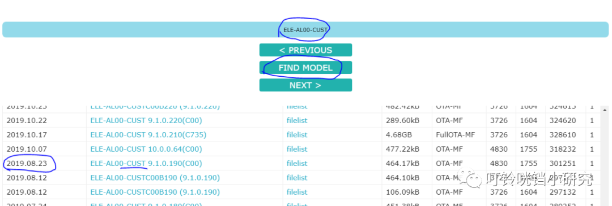
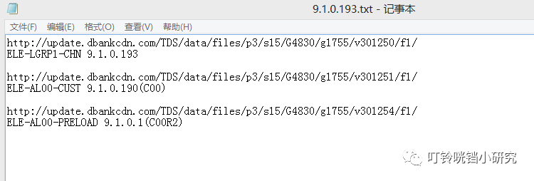
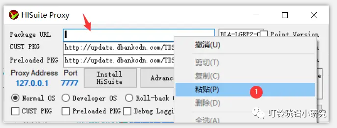
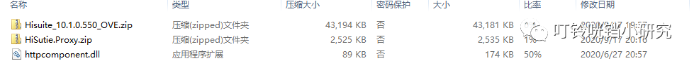
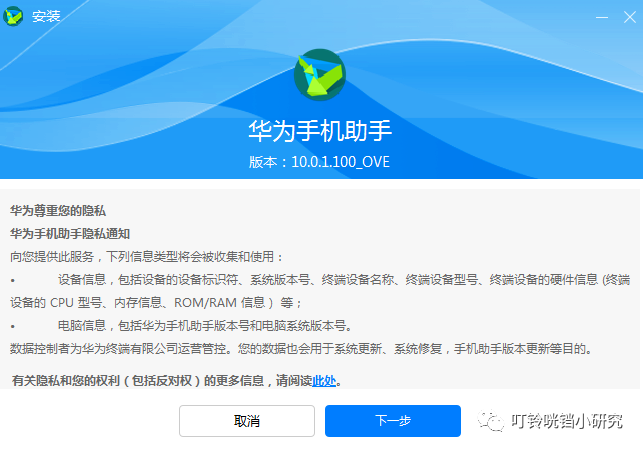
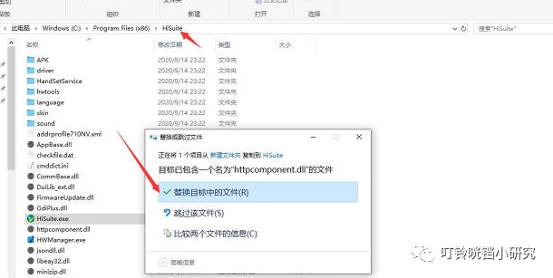
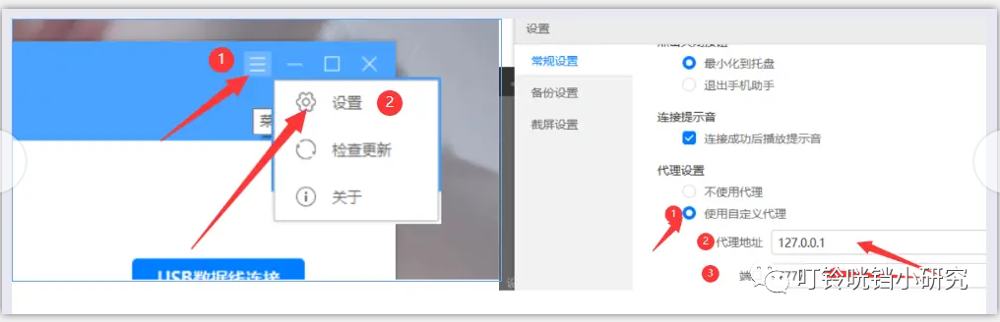
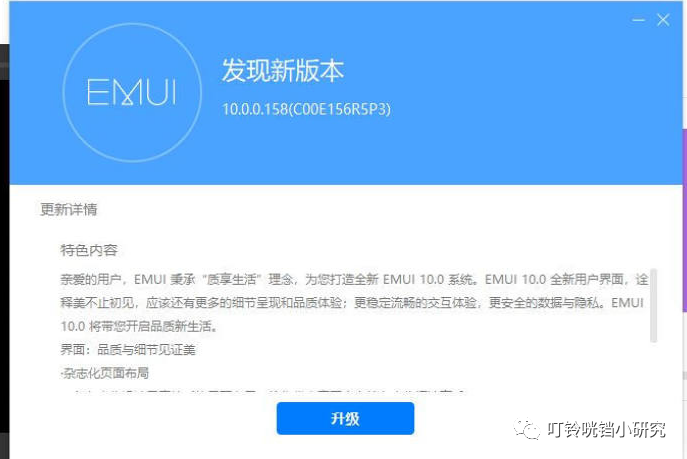

http://www.360doc.com/content/21/0108/15/32875768_955858444.shtml
本文章参考了两个帖子，并有很多朋友在论坛帮助，让我降级成功。现在把详细内容做成教程，供大家参考。
首先说明的问题：
1. 到底要不要花钱降级？其实花钱在某宝降级也可以，省事，风险也小。如果你是一个动手能力强，喜欢折腾的人，那么就请继续往下看。
2. 刷机到底有没有风险？这个我不知道，至少我买回来华为手机已经来来回回刷了很多次，暂时没有遇到变砖的问题，我认为只要系统没有病毒，软件是正版软件，数据线结实可靠，应该没有问题。
3. 降级到底好不好？emui9.1/10.0/11.0 我都用过了，说说优点和问题，仅个人观点。9.1 功能不如 10.0 和 11 功能多，但是整体流畅，续航完美，不卡顿，拍照效果好，可能有些人操作丝滑程度没有 10.0 以上版本舒服，手势导航有 bug，部分软件出现各种闪烁关闭的情况，所以我一直用三键导航。10.0 操作丝滑，但是拍照差很多意思，尤其是夜间拍摄，注意不是夜景拍摄，还有续航也不太好。11.0 版本体验了一下，耗电还好，跟 10.0 差不多，拍照也和 10.0 差不多，但是内存占用率高 10 个百分点以上，总是感觉不舒服，部分软件操作卡顿，其他问题没有发现，我是刷完机双清以后用的。
考虑好是否刷机后再继续进行 **！**
参考帖子地址：
1.https://www.coolapk.com/feed/21700271?shareKey=ZTdlN2RiOWEyMDMxNWZjZGRjMjQ~&shareUid=4266939&shareFrom=com.coolapk.market_10.5.3

2.https://www.bilibili.com/read/cv8315201

感谢酷安好友 “你现在好像可以凑成三连” 和 bilibili 好友 “鸿蒙系统发展史” 两位大神！
** 友情提示：刷机有风险 降级需谨慎 在开始以前务必备份数据 **** 注意：降级一定会丢失所有资料 ！！！！！** 免责声明：如操作不当造成的黑砖 数据丢失 本人不负责！
下面正是开始内容：
1. 准备
（1）系统准备，操作系统推荐 win10！
因为我用 win8 两台电脑都打不开其中一个重要软件，重新安装也不行，后来新装 win10 后就可以打开了。如果你遇到打开 Hisuite proxy 软件时出现停止错误，那么请更换系统，有人说缺少.netframework 支持，其实我都装了，也还是不行。可能有的小伙伴成功了吧。根据软件开发者说明要.netframework 4.8 版本，那么 win10 以下都是不支持的，所以只有 win10 能用。

（2）手机版本，降级 9.1.0.193 之前先要用华为手机助手降级到官方能降级 9.1 的那个版本，比如 p30 是 9.1.0.226，如果你的系统是 10.0.0.200 那么不能直接降级至 9.1.0.193。所以我从 11.0.0.120 降级的时候一共降级了四次，当然每次也就半个多小时。也就是降级任何一个大版本中间的小版本，要先将手机刷到这个大版本上，不能跨版本降级。我试过，会出错误。
（3）刷机包地址准备。
首先查看自己的刷机型号，手机输入 *##2846579##*，进入工程菜单，第 2 项单板信息查询，第 1 项版本信息，找到基础包版本号，定制包版本号，预装包版本号三个，比如 p30 基础包是 ELE-LGRP1-CHN，定制包是 ELE-AL00-CUST，预装包是 ELE-AL00-PRELOAD，后面的版本数字不用。

然后进入下面网页搜索 https://pro-teammt.ru/en/online-firmware-database-ru/?firmware_model=&firmware_page=0
选择我是人类，看图选择验证信息，进入搜索列表。

首 **** 先搜索基础包，然后找到想刷的版本。我选择了 9.1.0.193，本来想刷 9.1.0.109，可惜没有，那就没有办法了，193 也是最好的一个系统，看好是全量包，3.68 个 G 大小，看好日期，8 月 23 日，因为后面找定制包和预装包要对应日期。有人可能会问，为什么不选择 8 月 12 日的 193 版本，我个人认为后面的虽然版本号一样，但是应该有补丁存在，应该好点吧。点击 filelist，弹出一个链接框来，复制到记事本上，保留到 http://update.dbankcdn.com/TDS/data/files/p3/s15/G4830/g1755/v301250/f1 / 这个位置，后面的不要了。然后换行再复制版本号 ELE-LGRP1-CHN 9.1.0.193 到记事本上。基础包信息就找全了。
定制包和预装包获取方法一样，但是日期要和基础包的日期一样，不一样我没有尝试，会不会出问题自己考虑。也有人说可以只刷基础包，我怕有问题，都一起刷了。
<section>




到这里，地址准备完了，然后打开 Hisuite proxy 工具（在第三项软件准备 b 里面有），将上面的地址和版本号，按照顺序复制进去。左下角的两个勾打上，就是 CUST PKG 和 Preloaded PKG 前面两个勾打上。伪装服务器地址就准备好了。

1.
（2）准备软件
a. 华为手机助手 的 ove（国外）版本。百度搜索就有，可以不用最新版，有时候最新版会出现安装不了的情况，我也遇到过，低版本没问题，上面两个链接可以下载，为什么用 ove 版本，因为国内版本我没这么刷过！
b.Hisuite proxy 工具，个人理解，这是一个刷机时伪装华为服务器的代理软件，所以降级任意版本必须有他，要解压在一个文件夹内，以管理员身份运行。
c.httpcomponent 补丁文件，附件有下载，应该是修改了一些参数，可以和伪装服务器链接。

（3）配置刷机环境
a. 卸载原来的华为手机助手，安装下载的 ove 版本。

b. 安装完成后先不打开华为助手软件，找到下载的 httpcomponent 补丁文件复制到华为助手的所在文件夹里，替换完成。如果不知道文件夹在哪里，请自行百度，因为这步不会可能真的是小白！

c. 替换完成后打开 ove 版本华为助手，不用升级。设置代理服务器为 127.0.0.1，端口为 7777，与 Hisuite proxy 软件上显示的一样。

到这里，准备工作就结束了。
2. 然后就是像用 Huawei 手机助手普通刷机一样，发现版本 9.1.0.193，保存好数据之后，享受刷机过程吧。因为刷机后版本低，所以会有格式化硬盘的情况出现，不用慌，只要数据保存了，就没事。

刷完之后，版本完美，利用 adb 卸载各种无用功能，速度飞起，内存占用少，省电，拍照好都有了。希望大家能够成功！
再次感谢酷安好友 “你现在好像可以凑成三连” 和 bilibili 好友 “鸿蒙系统发展史”，有些图片来自你们的链接！
链接:https://www.lanzoui.com/b00zwv1ch
密码：2okq 作者：bili_340311671
https://www.bilibili.com/read/cv8315201 出处：bilibili